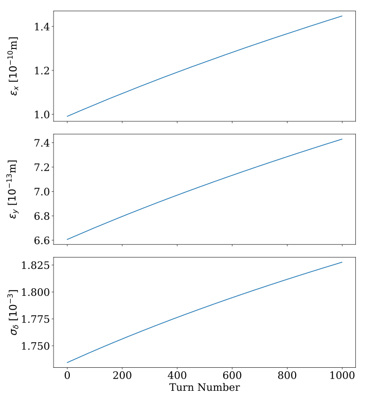

Gallery
This page contains a gallery of examples showcasing functionality provided by xibs
Click on any image thumbnail to see the corresponding example page with and access to the source code.

Analytical Growth Rates and Emittance Evolution
Analytical Growth Rates and Emittance Evolution